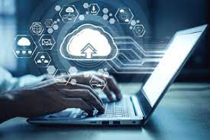
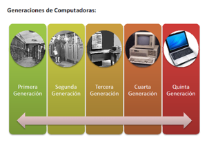
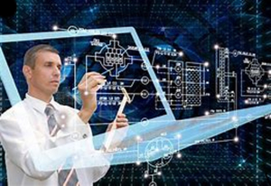

La informática es la ciencia vinculada al desarrollo de la computadora. Se encarga del tratamiento y estudio racional de la información mediante ordenadores.
En otras palabras, la informática abarca un conjunto de conocimientos teóricos y prácticos relacionados con la ciencia y la tecnología, que al combinarse, hacen posible el tratamiento automático y racional de la información a través de computadoras.
Esta disciplina combina aspectos teóricos y prácticos de otras áreas como la ingeniería, electrónica, matemáticas, lógica, teoría de la información y comportamiento humano.
El algoritmo informático, por ejemplo, es un conjunto de órdenes secuenciales que se ejecutan en un proceso para resolver un problema. Antes de escribir el código en un lenguaje de programación que la máquina entienda, el programador debe resolver el algoritmo.



Generación de las computadoras:
Primera Generación (1940-1952):
INFORMÁTICA?
Victoria Tun